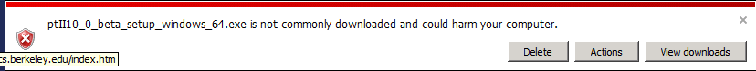

Downloads
Download Problems
Problems have been reported with downloading the installers.
Not Commonly Downloaded Message
When downloading, you may get a message like:

The issues is that the download is not common, the workaround is to click on the "Actions" button and then "Run Anyway".
Invalid or Corrupt Jar File
A Windows user reported this error window:

One possible work around is to download the .exe file and invoke the java command on the .exe
file:
java -jar ptII10_0_beta_setup_windows_64.exe
It looks like this error message is caused by a problem with the the .exe file that is produced by Launch4J.
See http://stackoverflow.com/questions/5913120/java-embedding-jar-inside-exe
for details.
Nightly Build
See the Ptolemy II Nightly Build
for snapshots and development releases.
Documentation
Installation Instructions
1. Install Java, if necessary
To run the Windows Ptolemy II installer requires that Java be installed on your machine.
If Java is not installed when you run the Windows Ptolemy II installer, then you will be directed
to install a Java Runtime Environment (JRE). This JRE is separate from the
JRE that is included in the Windows Ptolemy II installer.
Which Installer?
Under Windows, the Ptolemy II installer includes
a private copy of the Java Runtime Environment (JRE).
The private copy of the JRE includes Java packages
that are used by various domains and actors.
JRE vs. JDK
To run Ptolemy II, the Java runtime environment (JRE) is sufficient.
To run the applets in a browser, the Java plug-in is required.
The JRE is bundled with the plug-in, so downloading the plug-in
also installs the JRE.
To extend Ptolemy II with your own
Java code, the Java development kit (JDK)
or an equivalent Java development environment is required.
The JDK includes a Java compiler.
Which Version of Java?
Ptolemy II requires Java 1.5 or later, Java 1.5.0_22 is preferred,
Java 1.6 will also work.
One way to determine what version of Java (if any) is installed
is to run our
Java Version Applet , which
uses the Java 1.5 plug-in.
Another way is to run the command below to see whether
you have Java installed, and whether it is the proper version:
java -version
If the command cannot be found, or the version that is printed is
less than 1.5, you should install the plug-in, JRE 1.5, or JDK 1.5
or use download the installer that includes a private copy of the JRE.
Java Installers
2. Install Ptolemy II
Where to install?
Note that under Java 1.5.0, viewing local applets that have
spaces in the path name may fail if the applet tries to download a
data file. The workaround is to place the Ptolemy II installation in a
directory that does not have space in the pathname. For details, see
the Troubleshooting Guide.
In addition, the Copernicus code generator has a hard time with
spaces in the path name because of limitations in parameter
passing in Soot, a package that Copernicus uses.
Ptolemy II Installers
This page covers installing Ptolemy II via a traditional Windows Installer
Other formats include: